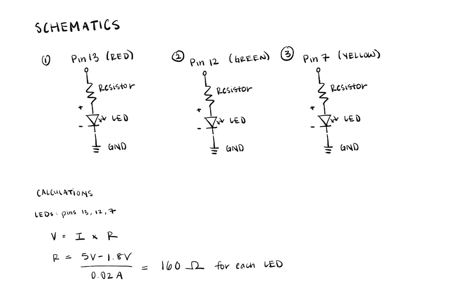
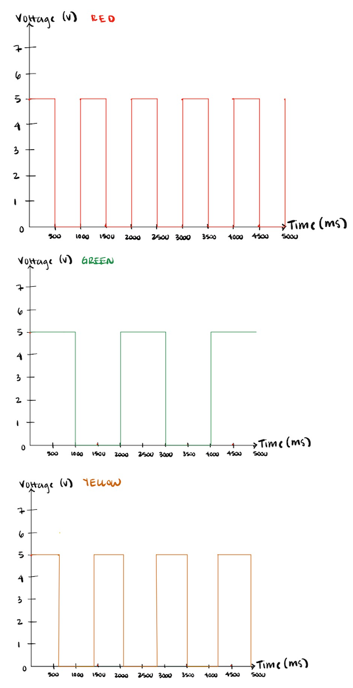
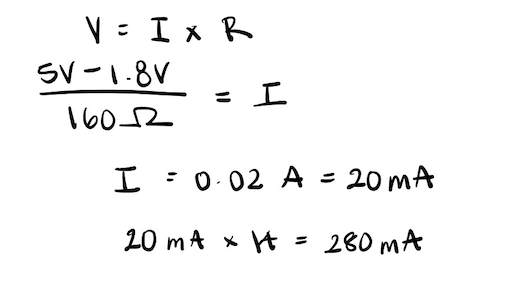

I began my assignment by first drawing out schematics before starting on my circuit.
The red light was pinned to 13, the green light was pinned to 12, and the yellow light was pinned to 7. The Arduino operates on a 5V power supply, so I used this as my starting point to start my calculations. Given that the colors red, green, and yellow lights have a voltage drop of 1.8V, and the desired current being 20 mA, I calculated each LED to have 160 ohms of resistance.
This was how I built my circuit with 3 indepdent blinking LEDs.

The resistors I chose for the circuit were 220 ohms for each of the LEDs. This is because 220 ohms resistors effectively limit the current, while still allowing the LEDs to shine. If the resistor value was too low, the LEDs could draw too much current and potentially burn out. A higher resistance would result in dimmer LEDs.
Below is the code I created to run my circuit:
// Pin definitions
int led1 = 13; // LED 1 connect to pin 13, RED
int led2 = 12; // LED 2 connect to pin 12, GREEN
int led3 = 7; // LED 3 connect to pin 7, YELLOW
// Timing variables, only store positive and zeros
unsigned long previousMillis1 = 0;
unsigned long previousMillis2 = 0;
unsigned long previousMillis3 = 0;
// Blinking intervals (milliseconds)
const long interval1 = 500;
const long interval2 = 1000;
const long interval3 = 700;
// LED states
int led1State = LOW;
int led2State = LOW;
int led3State = LOW;
void setup() {
// Initialize each LED pin as an output
pinMode(led1, OUTPUT);
pinMode(led2, OUTPUT);
pinMode(led3, OUTPUT);
}
void loop() {
// Get current time
unsigned long currentMillis = millis();
// Blink LED 1 (RED)
if (currentMillis - previousMillis1 >= interval1) {
previousMillis1 = currentMillis; // Save the last time LED 1 was switched
if (led1State == LOW) {
led1State = HIGH;
} else {
led1State = LOW;
} // Switch LED state
digitalWrite(led1, led1State); // Set the LED state to HIGH or LOW physically
}
// Blink LED 2 (GREEN)
if (currentMillis - previousMillis2 >= interval2) {
previousMillis2 = currentMillis; // Save the last time LED 2 was switched
if (led2State == LOW) {
led2State = HIGH;
} else {
led2State = LOW;
} // Switch LED state
digitalWrite(led2, led2State); // Set the LED state to HIGH or LOW physically
}
// Blink LED 3 (YELLOW)
if (currentMillis - previousMillis3 >= interval3) {
previousMillis3 = currentMillis; // Save the last time LED 3 was switched
if (led3State == LOW) {
led3State = HIGH;
} else {
led3State = LOW;
} // Switch LED state
digitalWrite(led3, led3State); // Set the LED state to HIGH or LOW physically
}
}
Here is a video of my circuit in action:

The red light is blinking at 500 ms, the green light is blinking at 1000 ms, and the yellow light is blinking at 700 ms.
(1) Graph of LEDs
(2) The Aurdino has 14 total digital pins, from 0 to 14. This means that it could blink 14 LEDs indepdently. If all 14 LEDs were working at the same time, it would draw 280 mA. 
(3) To blink the LEDs unwil we can no longer tell by the human eye if they are blinking, it must be blinking at 10 milliseconds fast.